2주차 — PH 기반 상품 식별 정확도 개선 (94%)
Latest
▼
10종 100장으로 PH 분류를 검증하고, 전처리와 분류 방법을 개선하였다.
중앙 50% 고정 크롭 + 128×128 해상도 표준화 + 다중 filtration 결합으로
100번 중 94번 첫 번째 답이 정답(Top-1 94%), 5개 후보 안에 정답이 반드시 포함(Top-5 100%)을 달성하였다.
카메라 가이드 프레임 안에 상품을 놓고 촬영하면, 상품이 사진 중앙에 위치한다.
중앙 50%를 고정 크롭하여 항상 동일한 영역을 잘라내고,
128×128 grayscale로 통일하여 PH 비교의 일관성을 확보한다.
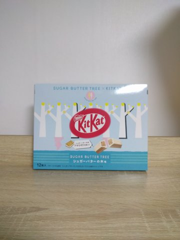
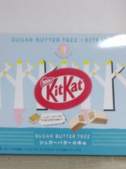
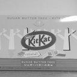
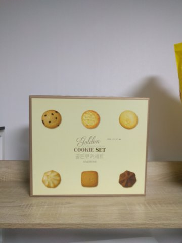
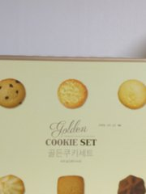
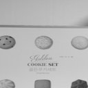
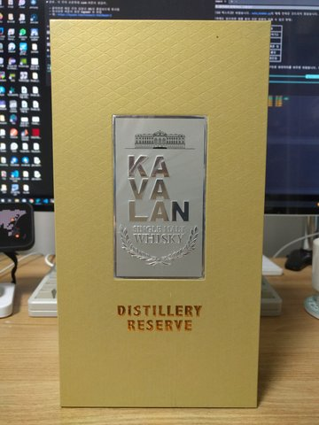
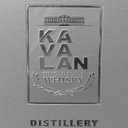
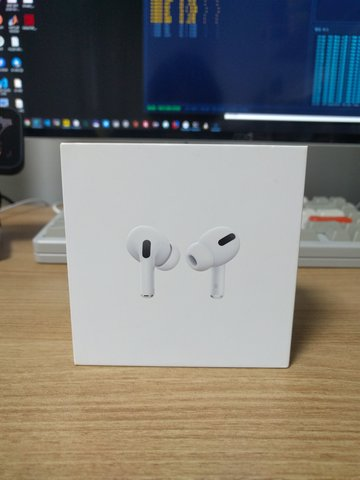
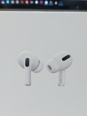
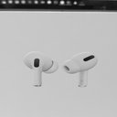
위: 원본(3024×4032) → 중앙: 50% 크롭(1512×2016) → 아래: 128×128 grayscale
실험 데이터 — 10종 × 10장data
10종 박스형 상품을 각 10장씩, CameraX 가이드 프레임 안에서 촬영했다.
| Product | Type | Images |
|---|---|---|
| kitkat | 초콜릿 (박스) | 10 |
| cookie | 쿠키 (박스) | 10 |
| every time | 영양제 (박스) | 10 |
| orthomol | 영양제 (박스) | 10 |
| Airpods Pro | 이어폰 (박스) | 10 |
| Philips JC302 | 면도기 세정액 (박스) | 10 |
| pokemon go ++ | 카드 (박스) | 10 |
| stanley | 텀블러 (박스) | 10 |
| kavalan | 위스키 (박스) | 10 |
| tubing band | 운동밴드 (박스) | 10 |
- 사진을 숫자로 변환 — 128×128 grayscale 이미지에 PH를 적용하면,
그 사진의 형태적 특징을 요약한 숫자 벡터(예: 18개의 숫자)가 나온다. - 숫자끼리 거리 비교 — 두 사진의 숫자 벡터 간 거리를 계산한다.
같은 상품이면 숫자가 비슷해서 거리가 가깝고, 다른 상품이면 멀다. - 가장 가까운 것을 정답으로 판정 — “이 사진은 뭘까?” 물으면,
나머지 99장 중 거리가 가장 가까운 사진의 상품명을 답으로 내놓는다. - 100장 모두 반복 (Leave-One-Out) — 100장을 하나씩 빼면서 위 과정을 반복한다.
100번 물어서 94번 맞히면 Top-1 94%.
Top-1 = 첫 번째 답이 정답인 비율 / Top-5 = 가까운 순서로 5개를 후보로 줬을 때 그 안에 정답이 있는 비율
위 과정에서 “사진을 숫자로 변환하는 방법”과 “비교하는 방법”을 바꿔가며 정확도를 측정했다.
Sublevel(밝기값 기반) /
Edge(윤곽선 기반) /
Gradient(밝기 변화량 기반)
1-NN(가장 가까운 1장으로 판정) /
3-NN(가장 가까운 3장의 다수결) /
Centroid(상품별 평균 벡터와 비교)
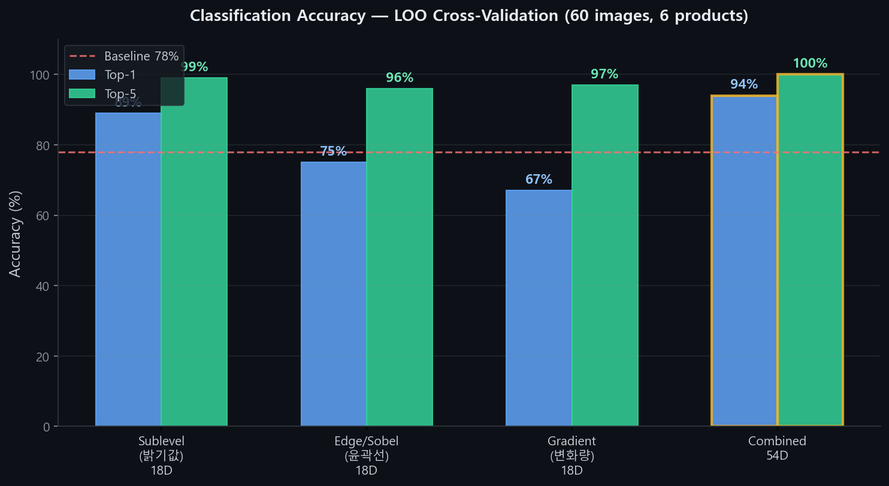
| 관점 | 차원 | Top-1 | Top-5 | 설명 |
|---|---|---|---|---|
| Sublevel (밝기값) | 18D | 89% | 99% | 밝기 패턴에서 PH 추출 |
| Edge / Sobel (윤곽선) | 18D | 75% | 96% | 윤곽선에서 PH 추출 |
| Gradient / Laplacian (변화량) | 18D | 67% | 97% | 밝기 변화량에서 PH 추출 |
| Combined 54D (3관점 결합) | 54D | 94% | 100% | Best — 위 3개를 합쳐서 상호 보완 |
각 관점은 단독으로 67~89%이지만, 3개를 합치면 서로 다른 특징을 보완하여 94% / 100%를 달성한다.
전체 실험 결과 — 비교 방식별 상세detail
같은 관점에서도 비교 방식을 바꿔 실험했다: 1-NN(가장 가까운 1장), 3-NN(3장 다수결), Centroid(평균 벡터 비교).
추가로 Persistence Image(450D), CFV 3D(핵심 값 3개) 등 다른 벡터화 방법도 시도했다.
| Method | Dim | Top-1 | Top-5 | 설명 |
|---|---|---|---|---|
| SUBLEVEL (밝기값 기반) — 비교 방식별 | ||||
| Sublevel 1-NN | 18D | 89% | 99% | 가장 가까운 1장으로 판정 |
| Sublevel 3-NN | 18D | 92% | 99% | 3장 다수결 — 안정성 향상 |
| Sublevel 5-NN | 18D | 84% | 99% | 5장 다수결 — k가 크면 오히려 하락 |
| Sublevel Centroid | 18D | 84% | 99% | 상품 평균 벡터와 비교 |
| 다른 벡터화 방법 | ||||
| CFV 3D | 3D | 52% | 92% | 핵심 값 3개만 — 해석 쉬움, 정확도 낮음 |
| Persistence Image 1-NN | 450D | 87% | 98% | birth-death 밀도 격자 — 고차원 |
| COMBINED 54D — 비교 방식별 | ||||
| Combined 54D 1-NN | 54D | 94% | 100% | Best |
| Combined 54D 3-NN | 54D | 92% | 100% | Top-5 100% 유지 |
| Combined 54D Centroid | 54D | 88% | 100% | 평균 벡터 비교 |
| 54D + PI (504D) | 504D | 91% | 99% | 차원 증가 대비 효과 제한적 |
같은 상품 → 비슷한 PH, 다른 상품 → 다른 PH가
명확하게 분리되어 정확도가 상승한다.
서로 다른 관점의 PH를 결합하면
단일 관점에서 놓치는 차이를 상호 보완한다.
상품별 분류 결과 (Sublevel 18D 1-NN, 89%)detail
| Product | 정답 | Accuracy | 오분류 |
|---|---|---|---|
| kitkat | 10/10 | 100% | — |
| orthomol | 10/10 | 100% | — |
| stanley | 10/10 | 100% | — |
| cookie | 9/10 | 90% | → Airpods Pro ×1 |
| every time | 9/10 | 90% | → cookie ×1 |
| Philips JC302 | 9/10 | 90% | → pokemon ×1 |
| pokemon go ++ | 9/10 | 90% | → Philips ×1 |
| tubing band | 9/10 | 90% | → pokemon ×1 |
| kavalan | 8/10 | 80% | → kitkat ×1, Airpods ×1 |
| Airpods Pro | 6/10 | 60% | → stanley ×1, cookie ×2, every time ×1 |
Cubical Complex Filtration (격자 복합체 여과) — 이미지의 밝기값을 threshold(문턱값)로 사용한다.
threshold t를 0에서 1까지 올리면, 어두운 픽셀부터 순서대로 "켜지면서" connected component(연결 성분)가 생겼다 합쳐지고, hole(구멍)이 생겼다 사라진다.
이 생성(birth)과 소멸(death)의 패턴이 곧 그 이미지의 위상적 지문이다.
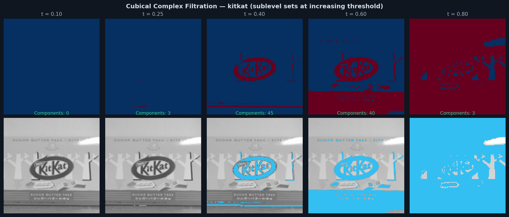
Persistence Diagram (지속성 다이어그램) — 각 위상적 특징의 birth(생성)과 death(소멸)를 점으로 찍는다.
대각선에서 먼 점 = 오래 살아남은 구조 = 의미 있는 특징. 같은 상품은 다이어그램 패턴이 유사하고, 다른 상품은 다르다.
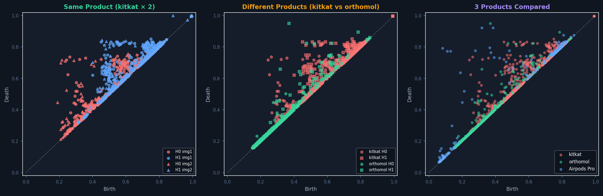
● H0 = connected components (연결 성분) ● H1 = holes (구멍)
Persistence Barcode (지속성 바코드) — 각 특징의 수명을 bar(막대)로 표현한다.
긴 막대 = 노이즈가 아닌 실제 구조. 상품마다 막대의 길이 분포와 개수가 다르므로, 이를 통계적으로 요약하면 18차원 특징 벡터가 된다.
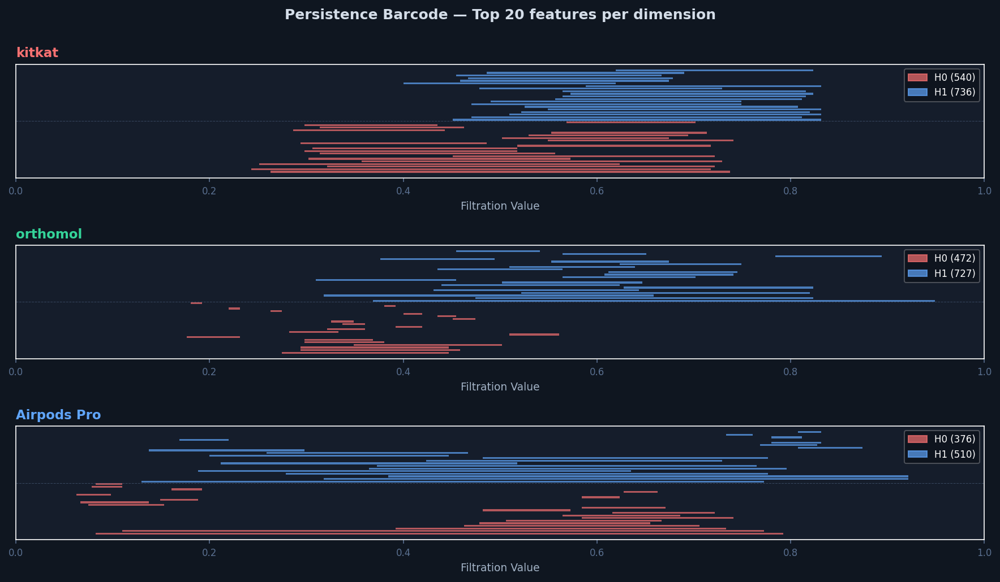
클러스터 분리 시각화 — t-SNE(고차원→2D 압축), 참고ref
54D 벡터를 t-SNE(고차원→2D 압축 도구)로 2D로 줄이면 상품별로 깔끔하게 분리되는 것을 확인할 수 있다.
t-SNE(고차원→2D 압축 시각화)는 시각화 도구이며, 실제 정확도(94%)는 원본 54D에서 LOO(한 장씩 빼면서 검증)로 측정한 값이다.
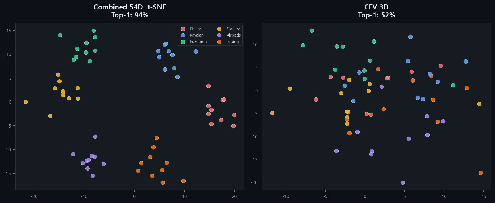
PH는 사진 1장만 등록하면 바로 인식이 가능하다.
새 상품 추가 시 재학습 없이 즉시 적용된다.
(판단 근거 설명 가능)
PH는 어떤 위상 구조가 유사한지
수치적으로 근거를 제시할 수 있다.
순수 수학 연산만으로 스마트폰에서
실시간 동작이 가능하다.
PH는 색상도 안 보고, 글자도 안 읽고, AI 학습도 없이 —
순수하게 grayscale 밝기 패턴의 위상적 구조만으로 상품을 구분하는 방법이다.
이것만으로 10종 상품을 94% 정확도로 맞히고, 5개 후보를 주면 100% 정답이 포함된다는 것은
PH가 상품 식별에 유효한 특징을 잡아낸다는 것을 증명한다.
핵심 발견은 크롭의 일관성이다.
단순한 고정 크롭이 높은 정확도를 냈다. 항상 같은 영역을 자르면
같은 상품은 비슷하게, 다른 상품은 다르게 나오는 것이 보장되기 때문이다.
비싼 모델 없이도, CPU 1초 연산만으로 이 정도 정확도를 낼 수 있다.
다만, 현재는 10종 박스형 상품이라는 제한된 조건이다.
Airpods Pro(60%)처럼 매끈한 표면은 grayscale에서 형태 차이가 적어 구분이 어렵고,
상품 수가 늘어나면 정확도가 떨어질 수 있다. PH 단독의 한계를 넘기 위해
다음 주차에서 색상과 텍스트 정보를 결합한다.
- LOO(한 장씩 빼면서 검증)는 동일 세션 데이터 — 같은 날 같은 환경에서 촬영한 100장 안에서의 정확도다. 시간이 지난 뒤 다시 촬영한 사진으로 Temporal Split(시간차 재촬영 검증)을 해야 실사용 성능을 확인할 수 있다.
- 10종 × 10장은 proof-of-concept — 촬영 장수를 늘리고 시간차를 두고 재촬영했을 때의 정확도 변화를 추적해야 실사용 가능성을 증명할 수 있다.
- 색상 히스토그램 — PH는 흑백만 보므로, 색상(HSV) 분포를 추가하여 "형태는 비슷하지만 색이 다른" 상품을 구분한다
- OCR 텍스트 — 상품 표면의 브랜드명/상품명을 읽어, 형태와 색상이 비슷해도 글자가 다르면 구분할 수 있게 한다
- 데이터 확장 + 시간차 검증 — 기존 10종에 대해 촬영 장수를 늘리고(10장→20+장), 수일 뒤 재촬영한 사진으로 Temporal Split(시간차 재촬영 검증)을 수행하여 실사용 환경에서의 정확도를 검증한다
- 온디바이스 인식 모드 — 고정 크롭 + PH를 폰에서 직접 실행하여, 서버 없이 2~3초 내 상품명을 표시하는 프로토타입
시스템 구축 사항infra
- CameraX 커스텀 카메라 — 중앙 80% 가이드 프레임 + 탭 포커스
- Spring Boot API — 이미지 업로드, PH 계산(@Async), 결과 조회
- 이미지 서빙 — GET /api/tda/results/{id}/image
- EC2 인프라 — nginx + MySQL 8.4 + GUDHI + PyTorch
환경 구축 상세infra
가이드 프레임
Retrofit 2
Multipart
cropBox 좌표
결과 조회
- AWS EC2(t3.medium, Seoul)에 nginx, Java 17, MySQL 8.4, Python 3.14, PyTorch 설치
- 도메인(kyuwan.kim) 연결, Let's Encrypt SSL 인증서 발급 및 자동 갱신
- Spring Boot 3.5.0 API 서버 — 고정 크롭 + GUDHI PH를 Python subprocess로 호출, @Async 비동기 처리
- REST API 6종: POST /analyze, GET /results, GET /products, GET /products/{name}, GET /results/{id}/image, GET /health
- MySQL DB — tda_analysis + tda_persistence_pair 2개 테이블, cropBox 좌표 저장
- systemd 서비스, nginx 리버스 프록시(kyuwan.kim/api/* → :8080)
- Android 앱 — CameraX 커스텀 카메라 + 가이드 프레임 + 탭 포커스, Multipart 업로드, 상품별 목록/상세 조회, 오프라인 큐
| Component | Stack | Role |
|---|---|---|
| tda-api | Spring Boot 3.5 · Java 17 · GUDHI | REST API + 고정 크롭 + PH 계산 |
| tda-android | Java · CameraX · Android SDK 34 · Retrofit 2 | 가이드 프레임 촬영 + 결과 조회 |
| EC2 | Ubuntu 26.04 · nginx · MySQL 8.4 · Python 3.14 | 서버 인프라 |
1주차 — 환경 구축 및 파이프라인 검증
▼
- Python + GUDHI 기반 PH 바코드 파이프라인 구현
초기에 JavaPlex(Java 기반 TDA 라이브러리)를 검토했으나, 이미지 PH에 특화된 CubicalComplex가 없어 GUDHI(C++ 기반, Python 바인딩)로 전환. 픽셀 격자를 직접 입력할 수 있어 변환 없이 빠르게 PH를 계산한다. - 같은 상품 10장 촬영 — 조건(각도, 거리, 조명)별 PH 바코드 일관성 검증
- Canny 엣지 자동 크롭 실패(5/10) → 고정 크롭 1816×2420으로 해결
- 18차원 특징 벡터 설계 — H₀/H₁ count, total/max/mean/std persistence, 구간별 Betti number

| Image | H₀ count | H₁ count | H₀ max pers. | H₁ max pers. |
|---|---|---|---|---|
| img_01 | 5,803 | 5,534 | 247 | 27 |
| img_02 | 4,784 | 4,499 | 245 | 31 |
| img_03 | 4,869 | 4,598 | 246 | 23 |
| img_04 | 5,256 | 4,970 | 247 | 21 |
| img_05 | 4,614 | 4,326 | 240 | 24 |
| img_06 | 3,884 | 3,706 | 248 | 24 |
| img_07 | 4,698 | 4,419 | 246 | 27 |
| img_08 | 4,826 | 4,560 | 249 | 32 |
| img_09 | 4,979 | 4,697 | 245 | 28 |
| img_10 | 4,654 | 4,377 | 246 | 27 |
동일 상품(kitkat) 10장을 각도·거리·조명을 달리하며 촬영하고
PH 특징 벡터를 비교한 결과,
H₀ max persistence 240~249, H₀ count 3,884~5,803으로
모든 이미지가 일정 범위 안에 모이는 것을 확인했다.
즉, 촬영 조건이 달라져도 같은 상품의 위상적 구조는 안정적으로 유지된다.
이는 PH가 같은 상품을 "같다"고 인식할 수 있음을 의미한다.
다음 주에는 여러 종류의 상품을 촬영하여,
서로 다른 상품끼리도 PH로 구별이 가능한지 검증하겠다.